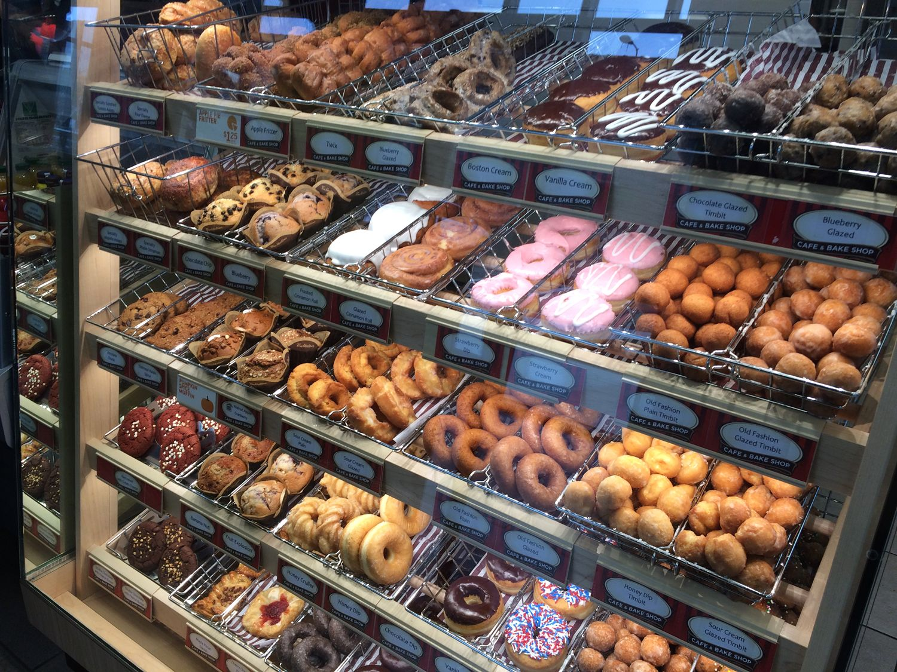
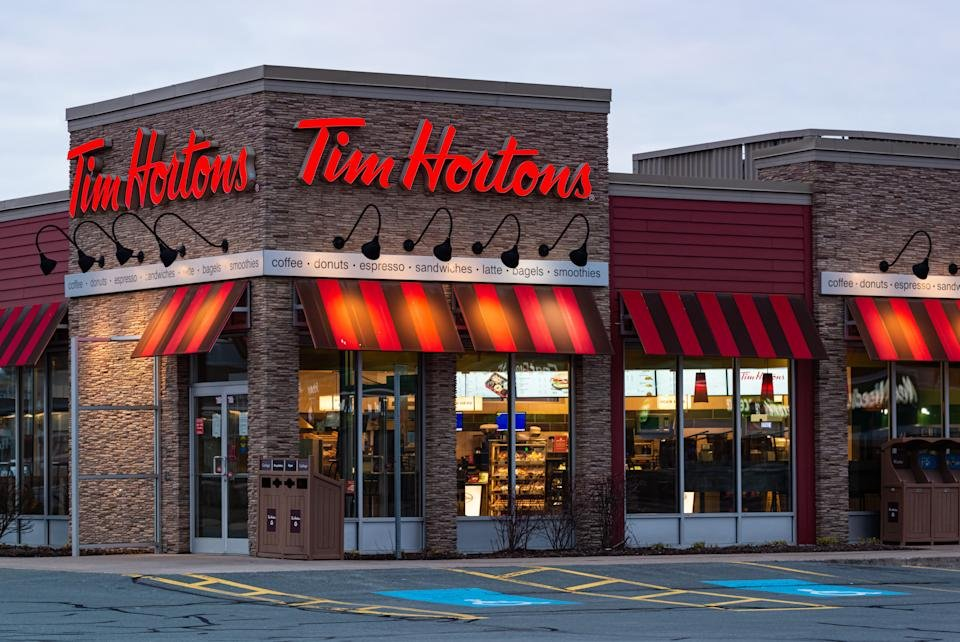
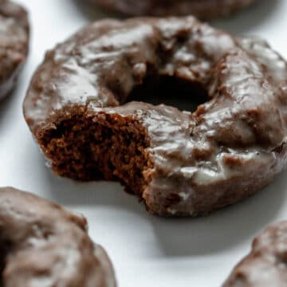
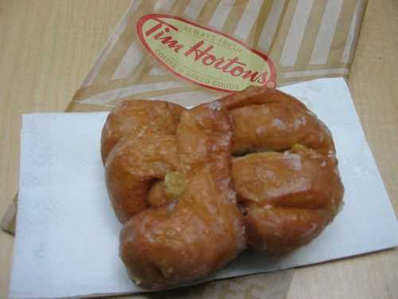

Traditionalist

If you are a traditionalist, doughnuts are likely comfort food to you and rightfully so. You might have fond memories of eating one or two or a box of 12 with your friends, parents or even grandparents. While you may not indulge in these sweet treats too often these days, they likely bring to mind a sense of community, a steaming double-double, and that well known brown Tim Hortons sign as this chain has locations sprinkled in almost every community in Canada.
Sorry about the formality there - we know you refer to Canada’s premier doughnut chain as “Tim’s” as it’s more of an old friend than a money driven foreign owned corporation, or at least it used to be. You likely either worked at Tim’s in highschool, or know someone who did. You may have even made your own doughnut creations when each Tim’s location baked their doughnuts on the premises. But if you didn’t get that creative while working in Tim’s kitchen, your go to donut was probably a honey dipped or double chocolate. Cruellers or apple fritters were reserved for fancy occasions and a gorgeous log shaped walnut crunch was a good standby choice if you felt a little wild.
 
Traditionalists know a good thing when they taste it, and no lilac coloured, sugar free sprinkled, ube filled, cream puff of a donut is going to change that.
Every one of their childhood friends, most of whom they are connected to on Facebook, would agree and give that sentence a thumbs up, if they could remember how to click thumbs up online.
Maybe their grandchildren will help remind them the next time they come to visit. Or maybe you can ask your grandchildren for them, if you remember.
Yes, your memory may be fading these days, but the taste of a fresh from the oven glaze still sticky doughnut was something you won’t ever forget. And that’s ok.
Find you closest Tim's! Click the image.